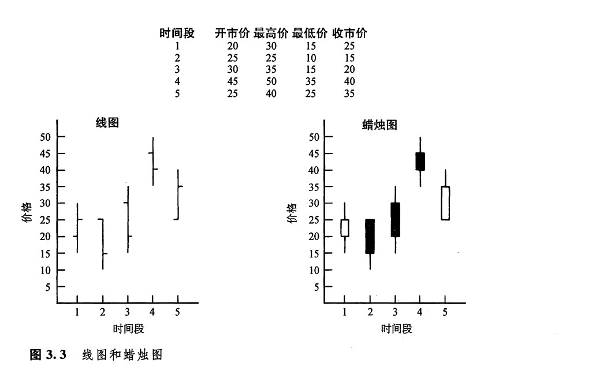
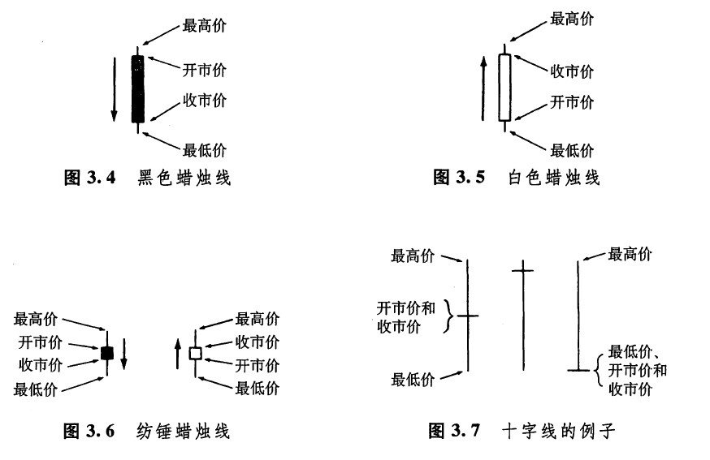

考虑到对大部分西方的技术分析师来说，蜡烛图都是刚刚接触，因此，在本章的各个部分，我们都将借助西方最常用的图表形式线图作为参照，来讲述蜡烛图的绘制方法。
在绘制日线图的时候，每根图线需要开市价、最高价、最低价和收市价四种价格。线图的图线主要由若干竖直的线段组成，它们表示了各个对应时间段的最高价和最低价之间的范围。从每根竖直线段上，向左伸出一小段横线头，表示对应时间段内的开市价（最初价）。从每根图线上向右伸出一小段横线头，代表对应时间段内的收市价（最后价）。
在图3.3中，首先列出了一组数据，然后根据这组数据，分别作出了相应的线图和蜡烛图。虽然图示的日线图和日蜡烛图采用的是同一组数据，但我们很容易就能看出，它们在作法上大异其趣。在蜡烛图的图线内部，有一段胖鼓鼓的部分，称为实体。它表示了相应交易日的开市价与收市价之间的价格范围。如果实体是黑色的（即，将之涂满黑色），则代表当日的收市价低于开市价。如果实体是白色的（即，将它保留为空白），则表示当日收市价高于开市价。

在实体的上方和下方，各有一条瘦瘦的竖直线段，称为影线。这两条影线分别表示当日市场曾经向上和向下运动的极端价格。实体上方的影线称为上影线。实体下方的影线称为下影线。相应地，上影线的顶端代表了当日的最高价，下影线的底端代表了当日的最低价。或许您已经感觉到了，正是因为这样的图线在外形上与一根蜡烛及其上下出头的蜡烛芯相像，所以人们把这种图表称为“蜡烛图”。如果某根蜡烛图线没有上影线，那么这就是所谓的秃头蜡烛钱。如果某根蜡烛线没有下影线，那么它就是所谓的秃脚蜡烛线。对日本人来说，在每根蜡烛线上，实体的部分代表了实质性的价格运动，而上下影线通常仅仅意味着无关宏旨的附属性价格变化。
在图3.4到图3.7中，分别例示了几种常见的蜡烛图线。图3.4是一根具有长长的黑色实体的蜡烛线，它表示市场的开市价接近当日最高价，收市价接近当日最低价，这是一段疲弱的行情。图3.5与图3.4恰好相反，因此，它表示的是一段坚挺的行情，当日的价格波动幅度很大，而且开市价接近最低价，收市价接近最高价。图3.6所示的蜡烛图线的实体较短，说明熊方与牛方正处于胶着状态，一时难分高下，这类蜡烛线称为纺锤线。纺锤线如果出现在横向延伸的交易区间中，就只有中性的意义。但是正如本书后面有关章节（在关于星形态和孕线形态的部分）介绍的那样，当纺锤线出现在特定形态中的时候，它就具有重要的意义。纺锤线既可能是白色的，也可以是黑色的。在图3.6中所展示的纺锤蜡烛线的上影线和下影线都不太长，不过事实上，纺锤蜡烛线的上下影线到底是长是短是无关紧要的。正是因为纺锤线的实体非常小，纺锤线才成其为纺锤线。图3.7中的蜡烛图线甚至没有实体。在这种极端情况下，蜡烛线的实体实际上缩小为一根水平的横线了。该图所示的几种例子就称为十字线。

当某个交易日的开市价和收市价处于同一水平，或者当开市价与收市价的水平极为相近时（例如，在债券市场上，开市价与收市价仅有2/32美元到3/32美元的差别，或者在谷物市场上，开市价和收市价仅有1/4美分的差别，等等），当日的蜡烛线就变成了一根十字蜡烛线。在这类蜡烛图线中，上下影线的长短也可以是多种多样的。十字线在蜡烛图技术中具有极端重要的地位，因此，我们需要单独花费一章来对其进行研究（参见第八章“神奇的十字线”）。
传统的日本蜡烛图采用红色和黑色的绘图方式，具有更丰富的色彩。在上面介绍的绘图方法中，我们只要用红色来替换现有的白色蜡烛线就可以了（当我们利用计算机来显示蜡烛图图表时，这样的绘图方式尤其有价值）。不过，选用这套色彩也有明显的缺陆，因为在为图表制作胶片时，以及在大部分打印机打印图表时，彩色是没有用武之地的，结果，所有的蜡烛图实体都印成了黑颜色的。
有些读者可能曾经听说过“阴线”、“阳线”的说法。这是中文称谓蜡烛线的术语。所谓阴线，就是黑色蜡烛线的别称，而阳线，就是白色蜡烛线的别称。在日本，黑色的蜡烛图线称作黑线，白色的蜡烛图线称作白线。
日本人认为，在每个交易日里，开市和收市两个时刻，承载着最沉重的市场情绪。因此，开市价与收市价之间的相对高低具有非同小可的重要意义。日本交易商有句格言：“头一个小时，引导一个交易日。”由此看来，开市行情奠定了整个交易日行情的基础。开市价为我们研判当日市场的方向提供了第一条线索。从时间上来看，正是在开市这一重要时刻，夜间发生的所有的新闻和小道消息，经过市场参与者的过滤、选择之后，全部融汇在一起了。
交易商心中越是焦急，就越渴望早一点入市成交。于是，就在开市的同一时刻，或许持有空头头寸的人争先恐后地抢着平仓，或许看好市场的潜在买家不肯后入地争着买进，或许保值商需要开立新头寸、了结旧头寸，等等。
经过开市时的一阵忙乱后，潜在的买家和卖家在估量自己的买卖价格水平时，就找到了一个基本的参考点。人们常常把参与市场交易与投身战场相提并论。从这个意义上来说，开市价就最早向我们报告了战场局势的概况，也为我们识别谁是友军、谁是敌人提供了临时的依据。有时候，大户交易商在开市时执行一笔数额巨大的买进或者卖出指令，企图左右市场方向。日本人把这种情形形容为拂晓袭击。请注意，这个词也是从军事术语中借用过来的。在本书的每一部分您都能够看到，日本人使用了许多类似的军事术语或者准军事术语。
蜡烛图技术术语和市场情绪
人群情绪是市场不可分割的组成部分，而技术分析方法则是衡量这种成分对市场的影响的唯一手段，日本蜡烛图技术的许多用语把这一事实揭示得淋漓尽致。日本人创造了一套活灵活现的命名体系，而这些名目所描述的，正是当对应的蜡烛图形态出现时，市场在情绪上的健康状态。如果您听到了“上吊线”或者“乌云盖顶”这样的说法，您还能觉得此时的市场情绪处于健康、正常的状态吗？——当然不能！这两种形态都是看跌的，它们的名称已经清楚地向我们昭示，此时的市场状态是不健康的。
当上述这些形态出现时，虽然市场的情绪或许正处在不健康的状态，但是，这并没有排除市场再度恢复正常状态的可能性。这番话的要领在于：一旦这类形态，比如说乌云盖顶形态出现，持有多头头寸者就应当采取防范性的保护措施；或者，根据当前市场的总体趋势，在综合考虑其他方面的因素之后，着手建立新的空头头寸。
本书将要介绍许多新形态和新观念。不过，好在日本人在蜡烛图技术中采用了形象生动的名称和术语，这就不仅使得应用蜡烛图技术进行市场分析成了一件饶有趣味的乐事，而且使得我们在记忆各种形态看跌或是看涨的技术意义的时候，收到了事半功倍的良好效果。举例来说，在第五章我们将要学习“黄昏星”和“启明星”两种形态。假如您现在仅仅听说了这两种形态的名称，但是既不知道它们的具体形状，也不知道它们对市场走向的技术意义，那么您会在其中选择哪一个是看涨的，哪一个是看跌的呢？明摆着的，既然黄昏星出现在夜幕即将降临之际，听起来它就属于看跌信号。事实上，也的确如此！那么，既然启明星出现在太阳即将升起之际咱当然就属于看涨信号了。
除了开市价之外，还有一个关键价格，收市价。在期贷市场上，是否追加保证金以及追加保证金的多寡，是根据当日收市价来计算的。由此我们可以断定，市场到底收市在什么样的水平，也是牵动市场参与者情绪的一大焦点。与此同时，对许多技术分析师来说，收市价格也是核心的价格参考点。为了确认市场对某个重要图表价位的突破是否有效，他们也许得等交易结束后才能下最后结论。许多计算机交易系统（比如说，移动平均线系统）也是以收市价格为基础的。如果在收市那一刻，或者在临近收市的时候，有人在市场上打出巨额买进指令或卖出指令，企图影响收市价格的水平，日本人就把这类行为称为夜袭。
从图3.4到图3.7可见，随着某个交易时间段的开市价（最初价）、最高价、最低价和收市价（最后价）的相对高低的不同组合，这根蜡烛图线也就具备了不同的外观。现在，让我们把注意力转向正题，看看怎样通过单根的蜡烛线，或者几根蜡烛线的组合，来获得市场走向的线索。
下一篇：第四章 反转形态
上一篇：第三章 绘制蜡烛图的方法